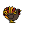

About Me

Every since I was a young boy, I loved taking things apart and I loved seeing how stuff worked. It fascinated me why and how things did what they did. As I got older, I began to gain an interest in animation. It combines both right and left brain, you have to know tech, software, anatomy, and have great spatial awareness as well as being creative and artistic.
Hobbies Include
- Spending time with family
- Singing and dancing
- Frisbee golf and ultimate frisbee
- Making seasonal themed pixelated sprite animations